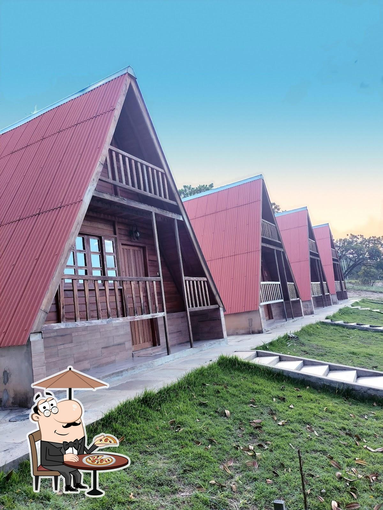

OS CHALÉS
Seu cantinho.
Seu tempo.
Cinco chalés com cama de casal e o aconchego da madeira. Conheça os espaços e planeje seus dias em Luminárias.
DESCANSO AO PÉ DA SERRA
Madeira, luz natural
e espaço para desacelerar.
O Complexo Pé da Serra conta com cinco chalés com cama de casal. As fotografias mostram as fachadas e o interior de uma das acomodações do conjunto.
- 5 chalés no complexo
- Cama de casal em cada chalé
- Restaurante separado
- Luminárias, Minas Gerais
As fotos são do conjunto de chalés. A unidade, a capacidade para o seu grupo e os serviços incluídos são confirmados no atendimento.
UM PASSEIO PELOS CHALÉS
Veja de perto.
Fotos reais das acomodações do complexo. Amplie para ver cada detalhe.
Fotografias reais do complexo. Toque para ampliar e ver a imagem completa.Origem das imagens ↗
DESACELERE. A SERRA ESPERA.
Troque a pressa
por dias para lembrar.
Conte à equipe quando você quer vir. O resto começa com uma boa conversa.